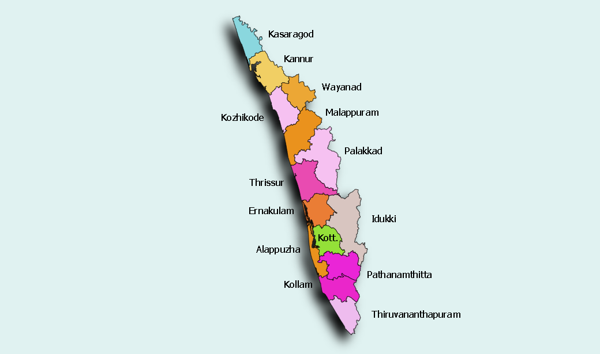

<!DOCTYPE html>
<html lang="en">
<head>
    <meta charset="UTF-8">
    <meta http-equiv="X-UA-Compatible" content="IE=edge">
    <meta name="viewport" content="width=device-width, initial-scale=1.0">
    <title>Districts</title>
    <link rel="icon" type="image/x-icon" href="/images/favicon-16x16.png">
    <link rel="stylesheet" href="style.css">
    <link rel="stylesheet" href="bootstrap.min.css">
    <link href="https://cdn.jsdelivr.net/npm/bootstrap@5.1.3/dist/css/bootstrap.min.css" rel="stylesheet" integrity="sha384-1BmE4kWBq78iYhFldvKuhfTAU6auU8tT94WrHftjDbrCEXSU1oBoqyl2QvZ6jIW3" crossorigin="anonymous">
<script src="https://cdn.jsdelivr.net/npm/bootstrap@5.1.3/dist/js/bootstrap.bundle.min.js" integrity="sha384-ka7Sk0Gln4gmtz2MlQnikT1wXgYsOg+OMhuP+IlRH9sENBO0LRn5q+8nbTov4+1p" crossorigin="anonymous"></script>
<script src="https://kit.fontawesome.com/d45333ed2c.js" crossorigin="anonymous"></script>
</head>
<body>
</body>
</html>
<html lang="en">
  <head>
    <meta charset="utf-8">
    <meta name="viewport" content="width=device-width, initial-scale=1, shrink-to-fit=no">
    <meta name="description" content="">
    <meta name="author" content="">
    <link rel="icon" href="/docs/4.1/assets/img/favicons/favicon.ico">

    <title>Jumbotron Template for Bootstrap</title>

    <link rel="canonical" href="https://getbootstrap.com/docs/4.1/examples/jumbotron/">

    <!-- Bootstrap core CSS -->
    <link href="../../dist/css/bootstrap.min.css" rel="stylesheet">

    <!-- Custom styles for this template -->
    <link href="jumbotron.css" rel="stylesheet">
  </head>

  <body>

   <!-- Nav bar starts here -->
   <header class="site-header sticky-top py-1">
   <div class="myMargin">
    <nav class="navbar navbar-expand-lg navbar-light bg-light">
        <div class="container-fluid">
          <a class="navbar-brand" href="index.html">Home</a>
          <button class="navbar-toggler" type="button" data-bs-toggle="collapse" data-bs-target="#navbarSupportedContent" aria-controls="navbarSupportedContent" aria-expanded="false" aria-label="Toggle navigation">
            <span class="navbar-toggler-icon"></span>
          </button>
          <div class="collapse navbar-collapse" id="navbarSupportedContent">
            <ul class="navbar-nav me-auto mb-2 mb-lg-0">
              <li class="nav-item">
                <a class="nav-link " aria-current="page" href="expe.html">Experience Kerala</a>
              </li>
              <!-- <li class="nav-item">
                <a class="nav-link" href="#">Things to do</a>
              </li> -->
              <li class="nav-item">
                <a class="nav-link active" href="#">Districts</a>
              </li>
              <li class="nav-item">
                <a class="nav-link" href="loginform.html">Log In</a>
              </li>
              <li class="nav-item">
                <a class="nav-link " href="signup.html">Sign Up</a>
              </li>
              <li>            
            </ul>
            <form class="d-flex">
              <input class="form-control me-2" type="search" placeholder="Search" aria-label="Search">
              <button class="btn btn-outline-info" type="submit">Search</button>
            </form>
            
          </div>
        </div>
      </nav>
    </div>
    </header>
    <!-- nav bar ends here-->

    <main role="main">

      <!-- Main jumbotron for a primary marketing message or call to action -->
      <div class="jumbotron">
        <div class="container">
          <div class="d-flex flex-column">
          <h1 class="display-3 justify">Welcome to Kerala</h1>
          
          <p>Kerala, a state on India's tropical Malabar Coast, has nearly 600km of Arabian Sea shoreline. It's known for its palm-lined beaches and backwaters, a network of canals. Inland are the Western Ghats, mountains whose slopes support tea, coffee and spice plantations as well as wildlife. National parks like Eravikulam and Periyar, plus Wayanad and other sanctuaries, are home to elephants, langur monkeys and tigers.</p>
          <p><a class="btn btn-primary btn-lg" href="#" role="button">Learn more &raquo;</a></p>
        </div>
      </div>
      </div> 
      <div class="container-fluid">
        <!-- Example row of columns -->
        <div class="d-flex flex-column">
       
        </div>
        <div class="row">
          <div class="col-md-2">
            <h2>Trivandrum</h2>
            <p>Thiruvananthapuram (or Trivandrum) is the capital of the southern Indian state of Kerala. It's distinguished by its British colonial architecture and many art galleries. It’s also home to Kuthira Malika (or Puthen Malika) Palace, adorned with carved horses and displaying collections related to the Travancore royal family, whose regional capital was here from the 18th–20th centuries. </p>
            <p><a class="btn btn-secondary" href="tvm.html" role="button">Go to Trivandrum&raquo;</a></p>
          </div>
          <div class="col-md-2">
            <h2>Kollam</h2>
            <p>Kollam is a city in the state of Kerala, on India's Malabar Coast. It’s known as a trade hub and for its beaches, like lively Kollam and secluded Thirumullavaram. Sardar Vallabhbhai Patel Police Museum has artifacts tracing the history of the police force. Nearby, Ashtamudi Lake is a gateway to the Kerala backwaters, a network of waterways rich with vegetation. The striped 1902 Tangasseri Lighthouse has ocean views. </p>
            <p><a class="btn btn-secondary" href="kollam.html" role="button">Go to Kollam &raquo;</a></p>
          </div>
          <div class="col-md-3">
            <h2>Pathanamthitta</h2>
            <p>Pathanamthitta is a municipality situated in the Central Travancore region in the state of Kerala, India, spread over an area of 23.50 km². It is the administrative capital of Pathanamthitta district. The town has a population of 37,538.</p>
            <p><a class="btn btn-secondary" href="Pathanamthitta.html" role="button">Go to Pathanamthitta &raquo;</a></p>
          </div>
          <div class="col-md-2">
            <h2>Alappuzha</h2>
            <p>Alappuzha (or Alleppey) is a city on the Laccadive Sea in the southern Indian state of Kerala. It's best known for houseboat cruises along the rustic Kerala backwaters, a network of tranquil canals and lagoons. Alappuzha Beach is the site of the 19th-century Alappuzha Lighthouse. The city's Mullakkal Temple features a traditional design. Punnamada Lake's snake boat races are a well-known annual event. </p>
            <p><a class="btn btn-secondary" href="Alappuza.html" role="button">Go to Alappuzha &raquo;</a></p>
          </div>
          <div class="col-md-2">
            <h2>Kottayam</h2>
            <p>Kottayam, IPA: is a city in the Indian state of Kerala. Flanked by the Western Ghats on the east and the Vembanad Lake and paddy fields of Kuttanad on the west, Kottayam is a place that is known for extraordinary qualities. It is the district headquarters of Kottayam district, located in south-west Kerala.</p>
            <p><a class="btn btn-secondary" href="kottayam.html" role="button">Go to Kottayam &raquo;</a></p>
          </div>
        </div>
        </div> 
        <hr>
      </div> <!-- /container -->

    </main>
<!-- FOOTER -->
<footer class="container">
  <div class="icon">
    <i class="fa-brands fa-instagram" type="button"></i>
    <i class="fa-brands fa-facebook-square" type="button"></i>
   <i class="fa-brands fa-twitter-square" type="button"></i>
   <i class="fa-brands fa-youtube " type="button"></i>
   <i class="fa-brands fa-pinterest-square" type="button"></i>
  <i class="fa-brands fa-linkedin" type="button"></i></li>  
   <i class="fa-brands fa-whatsapp-square" type="button"></i>  
    </div>
  <p class="float-right"><a href="#">Back to top</a></p>
  <p>&copy; 2020-2022 Kerala Tourism. &middot; <a href="loginform.html">Privacy</a> &middot; <a href="index.html">Terms</a></p>
</footer>
</main>

    <!-- Bootstrap core JavaScript
    ================================================== -->
    <!-- Placed at the end of the document so the pages load faster -->
    <script src="https://code.jquery.com/jquery-3.3.1.slim.min.js" integrity="sha384-q8i/X+965DzO0rT7abK41JStQIAqVgRVzpbzo5smXKp4YfRvH+8abtTE1Pi6jizo" crossorigin="anonymous"></script>
    <script>window.jQuery || document.write('<script src="../../assets/js/vendor/jquery-slim.min.js"><\/script>')</script>
    <script src="../../assets/js/vendor/popper.min.js"></script>
    <script src="../../dist/js/bootstrap.min.js"></script>
  </body>
</html>
